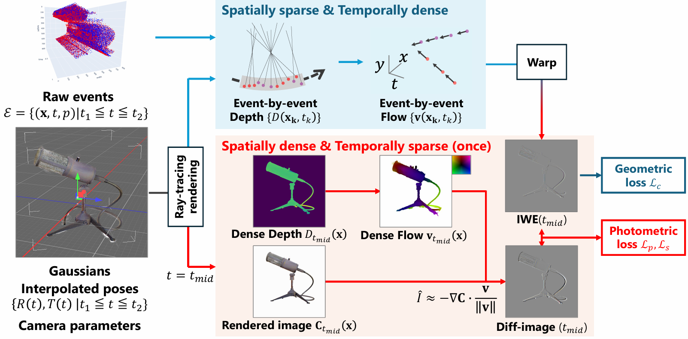

Abstract
Event cameras offer a high temporal resolution over traditional frame-based cameras, which makes them suitable for motion and structure estimation. However, it has been unclear how event-based 3D Gaussian Splatting (3DGS) approaches could leverage fine-grained temporal information of sparse events. This work proposes a framework to address the trade-off between accuracy and temporal resolution in event-based 3DGS. Our key idea is to decouple the rendering into two branches: event-by-event geometry (depth) rendering and snapshot-based radiance (intensity) rendering, by using ray-tracing and the image of warped events. The extensive evaluation shows that our method achieves state-of-the-art performance on the real-world datasets and competitive performance on the synthetic dataset. Also, the proposed method works without prior information (e.g., pretrained image reconstruction models) or COLMAP-based initialization, is more flexible in the event selection number, and achieves sharp reconstruction on scene edges with fast training time. We hope that this work deepens our understanding of the sparse nature of events for 3D reconstruction.